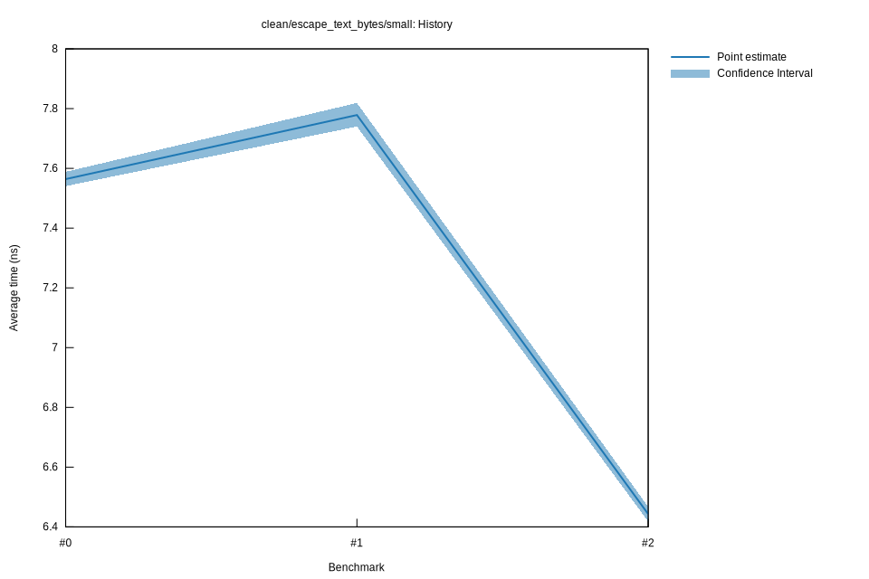

# 22025-11-02T17:45:43-08:00
|
Lower Bound |
Estimate |
Upper Bound |
| Value: |
6.42ns |
6.44ns |
6.47ns |
| Throughput: |
8.42GiB/s |
8.38GiB/s |
8.35GiB/s |
| Change in Value: |
-20.022% |
-18.859% |
-17.820% |
| Change in Throughput: |
+25.035% |
+23.243% |
+21.684% |
No change in performance detected.
# 12023-02-28T06:52:46-08:00
|
Lower Bound |
Estimate |
Upper Bound |
| Value: |
7.74ns |
7.78ns |
7.82ns |
| Throughput: |
6.98GiB/s |
6.94GiB/s |
6.91GiB/s |
| Change in Value: |
+2.7552% |
+4.3188% |
+5.9045% |
| Change in Throughput: |
-2.6813% |
-4.1400% |
-5.5753% |
No change in performance detected.
# 02023-02-03T23:00:40-08:00
|
Lower Bound |
Estimate |
Upper Bound |
| Value: |
7.54ns |
7.56ns |
7.59ns |
| Throughput: |
7.16GiB/s |
7.14GiB/s |
7.12GiB/s |